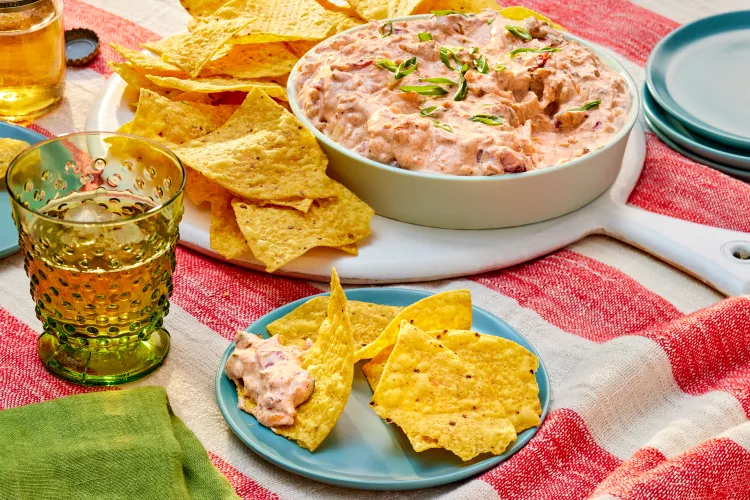

Home
Description
A flavorful, salty, creamy dip. It has twang and spice. Make ahead and chill, or make right before serving.
Ingredients
- 1 (16 ounce) container sour cream
- 1 (10 ounce) can fire roasted tomatoes and green chiles, drained
- 1 (1 ounce) envelope ranch dressing mix
- 1 (1 ounce) envelope 25%-less-sodium taco seasoning mix
- 1 (8 ounce) package shredded cheese
- 1/4 cup thinly sliced scallions (about 2 medium) (optional)
- Tortilla chips or potato chips, for serving
Steps
- Stir together sour cream, diced tomatoes, ranch mix, taco seasoning, and cheese in a medium bowl.
- Garnish with scallions, if desired.
- Serve cold or at room temperature with tortilla or potato chips.